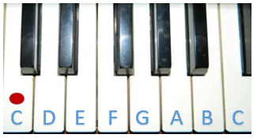
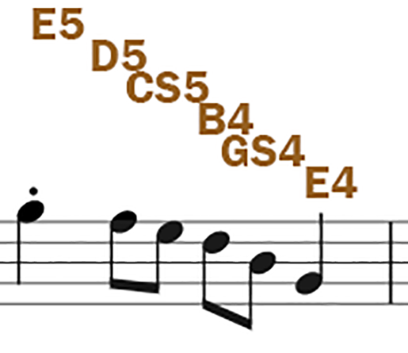
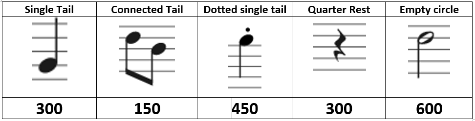

While we can’t play an MP3 file or a Youtube clip (because the Arduino isn’t powerful enough), we can still make the tones from last time particular notes, ones that match up to the notes on a piano. Then if we copy the notes from real music sheets, combine that with delay codes that match up to how long to play the note for, we can play actual songs!
Unfortunately, remembering all the numbers for every note would be difficult. We actually used a few last time, the number “262” is “Middle C”, the very middle key on a piano or keyboard, and the middle note when drawing music notes on paper. The notes in the activity which were 262, 294, 330, 349, 392, 440, 494, 554 are the white keys from Middle C up to the next C note.

But if you’ve used a piano before, you’ll know that we also have all the BLACK keys. These are called sharps or flats. When it’s a sharp it’s named after the white key on its left, and if it’s a flat, it’s named after the key on its right.
In the picture above, the first black key is both C-sharp (C♯) and D-flat (D♭)
So, we need to know a tone number for EVERY key on a piano, including the black keys. It would be nice if we could use the letter codes, and then number them from the lowest note as C1 up to the highest note as C8. We could use CS to say “C-Sharp”
Clicking on this link will take you to a text file that you can copy that defines a whole bunch of named notes using this pattern. It’s not a complicated file, just very long. Open it up and copy the whole thing into a new Arduino Sketch.
At the very bottom is our regular void setup() and void loop() spots. Like our first buzzer lesson, we’re going to put our code in setup so it only runs once when we press the reset button.
Try the following code out:
1
2
3
4
5
6
tone(3, NOTE_E5, 450); delay(450);
tone(3, NOTE_D5, 150); delay(150);
tone(3, NOTE_CS5, 150); delay(150);
tone(3, NOTE_B4, 150); delay(150);
tone(3, NOTE_GS4, 150); delay(150);
tone(3, NOTE_E4, 300); delay(300);
Make sure it works! If you’re not getting sound, make sure your buzzer is on pin 3 or change the code above so the 3s are wherever it is wired into.
The next image is very wide, showing the entire score (notes) for the whole song we’re playing. Click on it and work your way through each bar of music, leaving a gap after each one so it’s easy to work out where you’re up to.
The first bar is the 6 notes we have already written. Look closely at the notes in the picture and the code we have written

NOTE_E5
Make your way through the whole song. Part way through the music I stopped including the note names, so you’ll have to look back to work out what each one is. You don’t need to be able to read music, just find a note that’s on the same line or the same gap between lines. (EG: Notice that the first note is an E5, and it sits on top of the top line. Now notice the E5 that is the third “white” note. Even though it’s a different colour, it’s an E5 because it is sitting on top of that line).
Work out the note name. Work out the duration using the image above. As you finish each bar, leave a gap, and test your song so far.
If you know how to read music a little bit, you might think these notes are wrong, and that the lines should be “EGBDF” or “Every Good Boy Deserves Fruit” or similar. That’s true when you first start reading music, but as you get deeper, you’ll learn about scales. The start of the music document has 3 ♭ symbols that tell the reader this isn’t a “normal” set of music, and that some notes need to be shifted to the black keys. It makes the score less complicated looking, but requires the reader to remember which notes to move.
Finished this song? Great! find the score for a song you want to code up. Nothing too long or complicated, and songs with lots of instruments or distortion don’t tend to work well. Find the notes, maybe ask about the scale, and turn it into notes. Once you know the notes, you can turn it into Arduino code.
There’s also lots of existing Arduino music code available online, but they might make it work in different ways that aren’t compatible with this method. Try them out, but be aware it might be harder to understand.
This text hasn't been updated yet. Be nice!
This is my new site
This is the stuff I need to adjust later
{kind=link}